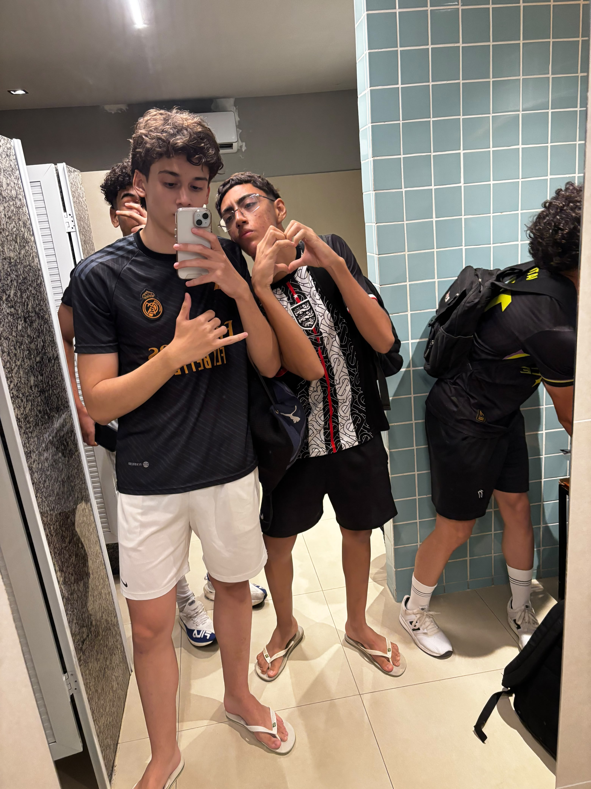

Minha História

Meu nome é Gustavo e eu curso Informática na E.E.E.P Jeová Costa Lima, em Russas. Escolhi esse curso porque desde pequeno gosto de tecnologia e queria aprender a criar coisas do zero, tanto a parte visual quanto a parte de lógica.
Sempre me interessei por tecnologia, principalmente na minha infância, em que aprendi a usar tablets,celulares,computadores,etc. Eu queria aprender como tudo isso funcionava,então não pensei 2 vezes em escolher Infórmatica. Mesmo tendo pouca experiência(apenas sabia alguns conceitos básicos da internet), sinto que estou aprendendo o conteúdo da escola e melhorando cada dia mais. Não é à toa que já fiz um trabalho em python, e agora este de HTML/CSS.
Sem dúvidas, a área de programação é a área da tecnologia que mais me desperta interesse, produzir sites,programas e tantas outras coisas é algo incrível. Atualmente estou aprendendo a organizar páginas com HTML, deixar elas bonitas com CSS e também estou vendo o começo de PHP e de PORTUGOL. Quero continuar estudando para no futuro conseguir me formar em Engenharia de Software e trabalhar com programação.